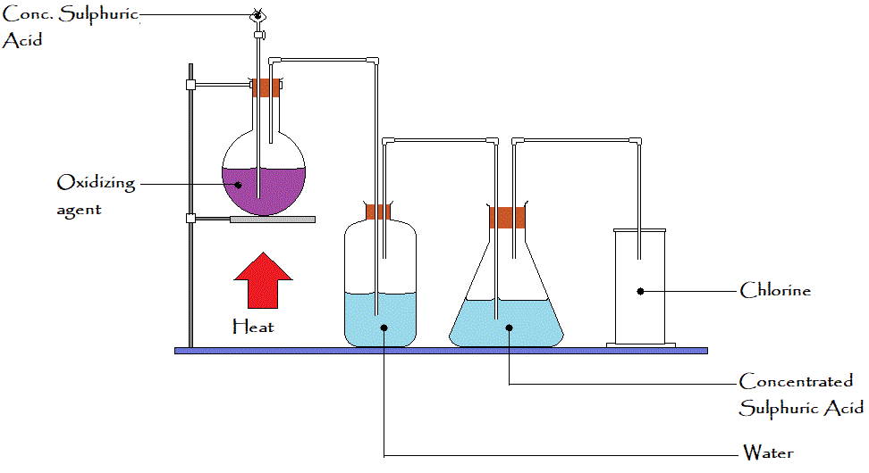

LABORATORY PREPARATION OF CHLORINE
Aim:Laboratory preparation of chlorine by oxidation of concentrated hydrochloric acid and Manganese (IV) oxide
Requirements: Round-bottomed flask, thistle funnel, two gas bottle or conical flasks, gas jar, Manganese (IV) oxide, concentrated Hydrochloric acid, Bunsen burner for heating, fume cupboard, water, concentrated Sulphuric acid.
Procedure:
- Place some solid Manganese (IV) oxide in a round bottom flask.
- Add some concentrated HCL acid gradually (drop wise) through a thistle funnel.
- Heat the mixture gently;
Chlorine gas is evolved, which contains impurities like Hydrogen chloride gas and water vapor.
- The gas mixture is then passed through one of the conical flask which contains water to
remove traces of Hydrogen Chloride gas
and then through concentrated Sulphuric acid to dry the gas
- The pure dry Chlorine gas is collected by downward delivery; since it's denser than air
- The set up is placed in a fume cupboard because Chlorine gas is poisonous.
MnO2 + 4HCL(aq) --------> 2MnCl(aq)+ H2O + CL2(g)

TEST FOR CHLORINE
Chlorine gas turns damp moist blue litmus Paper red and then bleaches it.
INDUSTRIAL USE OF CHLORINE
- Widely used as a bleaching agent in the textile factory.
- Used in the manufacture of plastic(PVC) and synthetic rubber.
- Used in the manufacture of bleaching powder and sodium chlorate (I)
- Used in dye works and laundries
- used in the manufacture of insecticide D.D.T